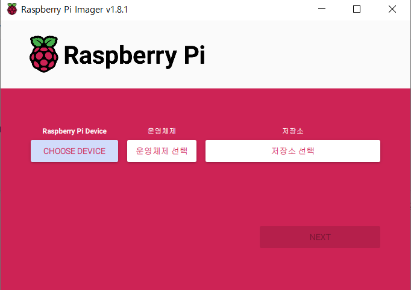
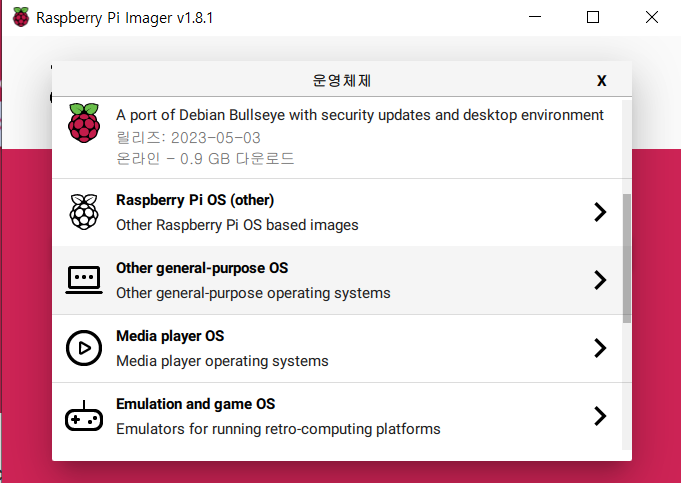
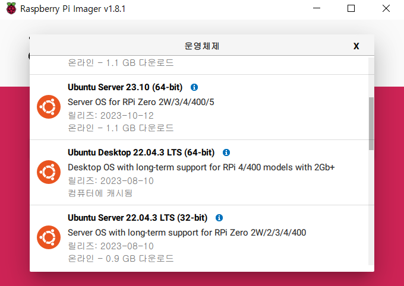
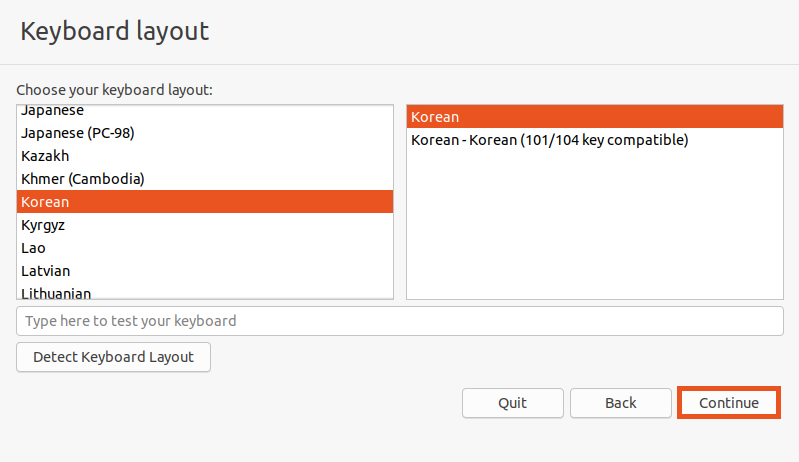
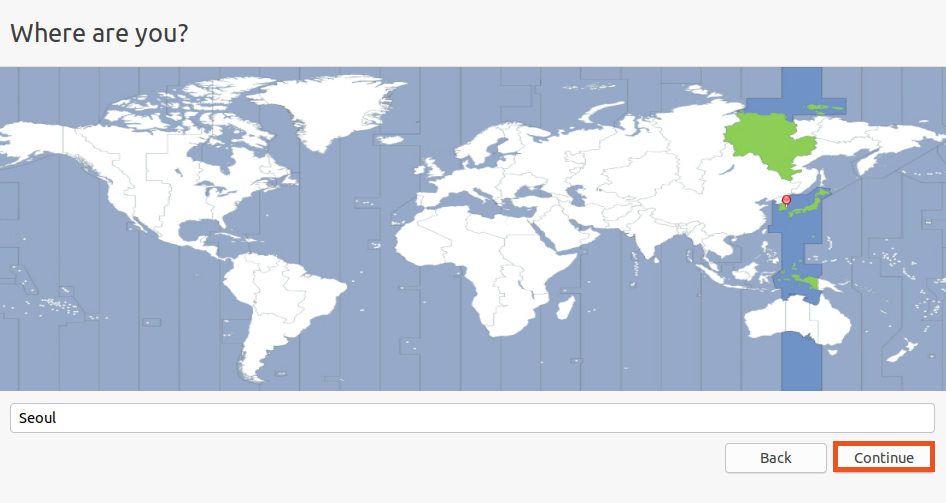

1. Micro SD Card 포맷
https://www.sdcard.org/downloads/formatter/
SD Memory Card Formatter for Windows/Mac | SD Association
Watch our video on how to use the SD Memory Card Formatter SD Memory Card Formatter 5.0.2 for SD/SDHC/SDXC The SD Memory Card Formatter formats SD Memory Card, SDHC Memory Card and SDXC Memory Card (respectively SD/SDHC/SDXC Cards) complying with the SD Fi
www.sdcard.org
Ubuntu를 설치하기에 앞서 위 링크에서 SD Card Formatter를 설치하여 SD Card를 포맷해주자! (라즈베리파이는 micro sd card이다)
2. Ubuntu 22.04 desktop image 설치
https://www.raspberrypi.com/software/
Raspberry Pi OS – Raspberry Pi
From industries large and small, to the kitchen table tinkerer, to the classroom coder, we make computing accessible and affordable for everybody.
www.raspberrypi.com
우선 여기서 Raspberry Pi Imager를 설치해주자

Raspberrypi Pi Device에는 사용할 라즈베리파이의 버전을, 운영체제에 Ubuntu 22.04 desktop, 저장소는 사용할 micro sd card를 선택해주면 된다.
 
Ubuntu 22.04 이미지는 운영체제 선택 -> Other general-purpose OS -> Ubuntu -> Ubuntu Desktop 22.04.3 LTS(64-bit)을 설치해주도록 하자.
+ 설치 후 포터블 모니터와 연결했는데 무지개 화면만 계속 떠서 SD카드 포맷만 10번 넘게 했다...(이럴경우 sd 카드를 교체하자)
3. Ubuntu 22.04 설치

Keyboard layout도 한국으로 설정해주고,

지역도 서울로 설정해준뒤,
이후 사용자이름, 컴퓨터 이름, 그리고 비밀번호를 설정하는 란이 나온다. 이것도 설정해주자.
그러면 Ubuntu 22.04 설치가 완료된다. 그리고 아래 명령을 입력하여 Ubuntu 환경세팅을 마친다.
sudo apt update
sudo apt upgrade
sudo apt install build-essential
4. ROS2 Humble 설치
우선 Ubuntu Universe repository를 확인한다.
sudo apt install software-properties-common
sudo add-apt-repository universe아래 명령을 순서대로 입력하여 ROS2 Humble을 설치한다.
sudo apt update && sudo apt install curl -y
sudo curl -sSL https://raw.githubusercontent.com/ros/rosdistro/master/ros.key -o /usr/share/keyrings/ros-archive-keyring.gpg
echo "deb [arch=$(dpkg --print-architecture) signed-by=/usr/share/keyrings/ros-archive-keyring.gpg] http://packages.ros.org/ros2/ubuntu $(. /etc/os-release && echo $UBUNTU_CODENAME) main" | sudo tee /etc/apt/sources.list.d/ros2.list > /dev/null
sudo apt update
sudo apt upgrade
sudo apt install ros-humble-desktop
아래 명령을 입력하여 잘 설치되었는지 확인한다.
source /opt/ros/humble/setup.bash
ros2 run turtlesim turtlesim_nodeturtlesim 거북이가 잘 표시되면 설치 성공이다!
+ 추가 설정
아래 명령은 ROS 관련 명령을 입력하기 전에 터미널에 매번 한 번 씩 입력해주어야 하는 명령이다. 이 명령을 터미널이 실행될 때마다 실행되는 bashrc 파일에 넣어주면 상당히 편리하다.
source /opt/ros/humble/setup.bash
우선 아래 명령으로 bashrc 파일을 연다.
gedit ~/.bashrc꽤나 많은 것들이 적혀있는데 가장 아래부분에 위 source 명령을 입력해주자.
이후 터미널을 재실행하면 source 명령 없이 ros 명령들이 잘 입력될 것이다!